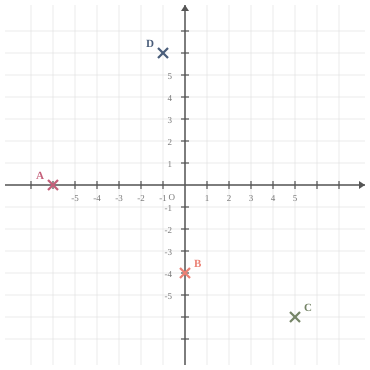
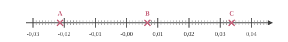
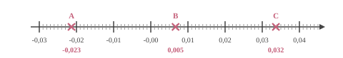
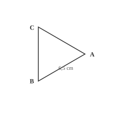

Le triple de $m$ peut s’écrire de plusieurs façons : ${\color{#8B3C52}\boldsymbol{3\times m}}$, ${\color{#8B3C52}\boldsymbol{m+2m}}$ ou encore ${\color{#8B3C52}\boldsymbol{3m}}$.
03
Question
Placer les points suivants : $A(-6\;;\;0)$ ; $B(0\;;\;-4)$ ; $C(5\;;\;-6)$ et $D(-1\;;\;6)$.
Les points sont placés aux coordonnées indiquées :

04
Question
On tire une boule au hasard dans une urne contenant $4$ boules noires et $6$ boules blanches. Quelle est la probabilité d'obtenir une boule noire ? On donnera le résultat sous forme d'une fraction irréductible.
Dans une situation d'équiprobabilité,
on calcule la probabilité d'un événement par le quotient :
$\dfrac{\text{Nombre d'issues favorables}}{\text{Nombre total d'issue}}$.
La probabilité est donc donnée par :
$\dfrac{\text{Nombre de boules noires}}{\text{Nombre total de boules}}
=\dfrac{4}{10} =\dfrac{2{\color{#C5607A}\boldsymbol{\times2}} }{5{\color{#C5607A}\boldsymbol{\times2}}}={\color{#8B3C52}\boldsymbol{\dfrac{2}{5}}}$
01
Question
Compléter avec le signe < ou >.
$$-3{,}3 \quad \ldots \quad-3{,}4$$
Pour résoudre l'équation $5x-1=18$, on effectue le calcul :
A. $\dfrac{18+1}{5}$ B. $18\times 5+1$ C. $(18-5)+1$ D. $\dfrac{18}{5}+1$
Pour résoudre l'équation $5x-1=18$, on commence par soustraire $-1$ des deux membres de l'équation, ce qui donne $5x=18+1$.
Ensuite, on divise les deux membres par $5$ pour obtenir $x=\dfrac{18+1}{5}$. La bonne réponse est la réponse A.
03
Question
À l'aide du schéma ci-dessous, déterminer : - deux segments de même longueur ; - le milieu d'un segment ; - un triangle rectangle ; - un triangle isocèle.
- Deux segments de même mesure : [$YV$] et $[VW]$ ou $[YU]$ et $[UW]$ ou $[XT]$ et $[TW]$. - $V$ est le milieu du segment $[YW]$. - $YXW$ est un triangle rectangle en $Y$, $YVU$ est un triangle rectangle en $V$ et $WVU$ est un triangle rectangle en $V$. - $YUW$ est un triangle isocèle en $U$ et $XTW$ est un triangle isocèle en $T$.
04
Question
Voici une série de 4 notes : $5, 9, 10, 8$. Quelle est la moyenne de cette série de notes ?
A. $6{,}5$ B. $8$ C. $5{,}5$ D. $7$
La moyenne de cette série de notes est : $\dfrac{5+9+10+8}{4}=\dfrac{32}{4}=8$. La bonne réponse est la réponse B.
01
Question
Déterminer la valeur de $10~\%$ de $138$.
Pour calculer $10~\%$ de $138$, on calcule $\dfrac{10 \times 138}{100} = \dfrac{10}{100} \times 138=0{,}1\times 138 = 13{,}8$.
Donc $10~\%$ de $138$ est égal à ${\color{#8B3C52}\boldsymbol{13{,}8}}$.
02
Question
Donner l'abscisse des points $A$, $B$ et $C$.


$\ A $ $(-0{,}023)$ $\ B $ $(0{,}005)$ $\ C $ $(0{,}032)$
03
Question
Calculer le périmètre du triangle équilatéral $ABC$ représenté ci-dessous :

Le polygone a $3$ côtés de longueur $6{,}5$ cm.
Le périmètre est donc égal à :
$3 \times 6{,}5 = {\color{#8B3C52}\boldsymbol{19{,}5}}$ cm.
04
Question
Une élève souhaite réaliser un programme avec un logiciel de
programmation pour dessiner un octogone régulier. Par quelles valeurs doit-il compléter les lignes 3 et 5 du bloc personnalisé ci-contre
pour obtenir un octogone régulier ?
Pour obtenir un octogone régulier, il faut répéter ${\color{#8B3C52}\boldsymbol{8}}$ fois et tourner de $\dfrac{360}{8}={\color{#8B3C52}\boldsymbol{45}}$ degrés.